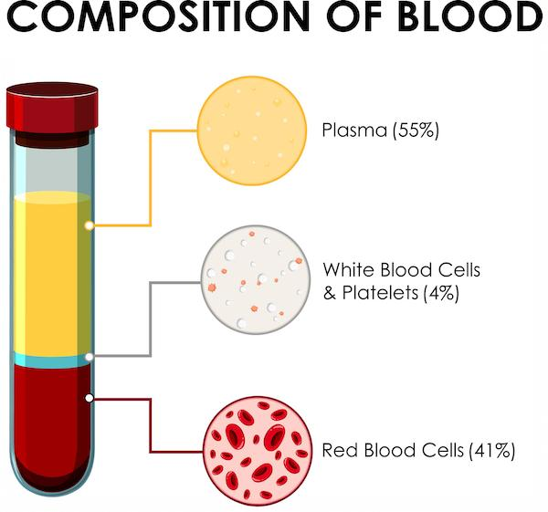
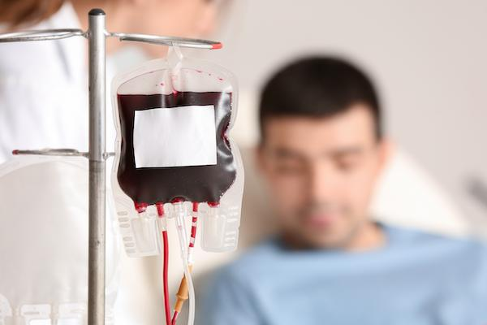

A blood transfusion is a way to give blood or parts of blood to a person through a vein. It can help replace what the body has lost or is not making enough of.
Red blood cells: Carry oxygen through the body
White blood cells: Help fight infection
Platelets: Help stop bleeding and form clots
Plasma: The liquid part that carries proteins and nutrients

Everyone has a blood type. The main types are A, B, AB, and O. Blood is also Rh-positive or Rh-negative. It is important to match the right type for a safe transfusion.
Some cancer treatments, like chemotherapy or radiation, can lower the number of healthy blood cells. Cancer itself can also affect the bone marrow, which is where blood cells are made.
You might need a transfusion if you have:
Low red blood cells: This is called anemia. It can make you tired or short of breath.
Low platelets: This can cause easy bruising or bleeding.
Low white blood cells: This raises your risk of infection.
Blood loss: Surgery or bleeding from cancer can cause you to lose blood.
A transfusion can help you feel better, heal faster, and lower the risk of bleeding or infection.

There are different kinds of transfusions based on what part of the blood you need:
Red blood cell transfusion: Used to treat anemia
Platelet transfusion: Helps stop bleeding in people with low platelets
Plasma transfusion: Helps blood clot properly, often for patients who have surgery or bleeding problems
White blood cell transfusion: Rare, but may be needed if your body cannot fight infection
Cryoprecipitate: A special plasma part with extra clotting factors, used if needed
Whole blood transfusion: Rare and usually only done after major blood loss
Most transfusions are safe and go well. Your care team watches closely to prevent problems. Still, a few things can happen:
Fever or chills
Mild rash or itching
Tiredness or headache
Rare allergic reaction
Very rarely, there is a risk of infection. Blood is tested to make this risk very low.
Let your care team know if you feel sick during or after a transfusion.
What kind of transfusion am I getting?
How will I feel during and after the transfusion?
How long will it take?
Are there side effects I should watch for?
Will I need more transfusions later?
Your care team is here to help. Always ask questions if you are unsure about anything.
Thank you for trusting us with your care. We are here to support you and want you to feel your best. Contact us with any questions.
IF YOU HAVE A MEDICAL EMERGENCY, CALL 911 OR GO TO THE EMERGENCY ROOM.
The information presented is intended for general information and educational purposes. It is not intended to replace the advice of your health care provider. Contact your health care provider if you believe you have a health problem.
Last updated May 2025
© 2025 Mytonomy, Inc. All rights reserved.